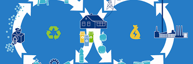

As per wikipedia, a circular economy is an economic system aimed at minimising waste and making the most of resources.
A circular economy is restorative and regenerative by design. This means materials constantly flow around a ‘closed loop’ system, rather than being used once and then discarded. In the case of plastic, this means simultaneously keeping the value of plastics in the economy, without leakage into the natural environment. But this is easier said than done. The Ellen MacArthur Foundation reported that more than 40 years after the launch of the first universal recycling symbol, just 14% of the plastic packaging used globally is recycled, while 40% ends up in landfill and 32% in ecosystems (with the remaining 14% used for incineration or energy recovery). To move society away from the “take, make, dispose” mindset that has long-informed business models, a fundamental rethink is required. This will involve improving recycling, promoting reuse, creating a market for recycled materials and redesigning products with end of life in mind.
End-of-life needs to be front of mind throughout product development processes.
Boosting Demand for Recycled Plastics
Poorly functioning markets for recycled plastics is one of the biggest barriers facing a circular plastics economy, presenting a challenge to improving global recycling rates. The raw feedstocks for most plastics are fossil fuels, which are currently cheaper to use than recycled materials. As such, the economics of plastic recycling are weak. While we see many companies making bold new commitments and goals for recyclability, few are thinking about their role in creating demand – that is, stimulating end markets for recycled material. To drive demand, companies must commit to using post-consumer resin (PCR) wherever possible. Using PCR will stimulate demand for the materials, creating vital end markets that make the domestic recycling stream viable.Designing for Recyclability
Today, producers of plastic and packaging have little or no incentive to consider recycling or reuse when they design products, but end-of-life needs to be front of mind throughout product development processes. Plastics are made from a range of molecular chains called polymers, which perform a wide variety of properties and can be highly customised to meet each manufacturer’s specific requirements. This diversity complicates the recycling process. One solution would be to take note of industry guidelines – including those from WRAP – that advise packaging manufacturers, brand owners and retailers on how to embed recyclability principles into their design processes. Such guidance includes reducing the use of colourants, labels, sleeves and adhesives to simplify the recycling process. In a bid to streamline the market and simplify recycling, Marks & Spencer are assessing the feasibility of making all own-brand plastic packaging from one polymer by 2022 (they have already moved from 11 polymers down to 4 today). In addition, much of the packaging we currently rely on is flexible – including crisp packets and pet food pouches – which are made from multiple materials, adhesives and coatings that cannot be easily separated and recycled. To overcome this, CEFLEX – a consortium of European companies and associations representing the flexible packaging value chain, is working to develop robust design guidelines for both flexible packaging and the infrastructure used to collect, sort and recycle it.

Key considerations:
- Look to build economies of scale: Support projects and initiatives that improve the economics of recycling infrastructure and recycled polymers.
- Embrace a holistic approach: It is not enough for companies to be concerned about their own materials and what they are made of – they need to be aware of how they impact the wider system of collection and recycling.
- Think local as well as global: Plastic waste causes global pollution, but solutions need to be delivered at a local level if they are to have long-lasting impact. Interventions should always reflect localised infrastructure which will vary around the globe.
- Collaborate to innovate: Collaboration between resin suppliers, packaging manufacturers, brands, waste contractors and recyclers is the only way to build a circular economy with benefits throughout society.
- Think long term: For companies willing to invest for the longer term, there will be significant commercial reward as recycling infrastructure and technology mature and packaging design evolves.